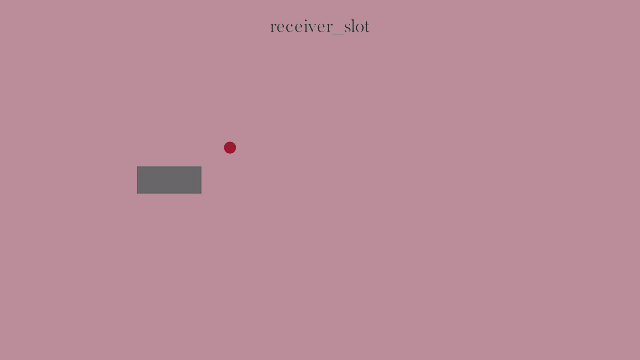
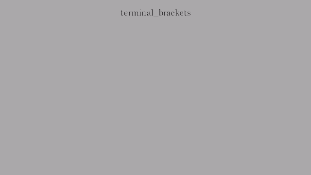
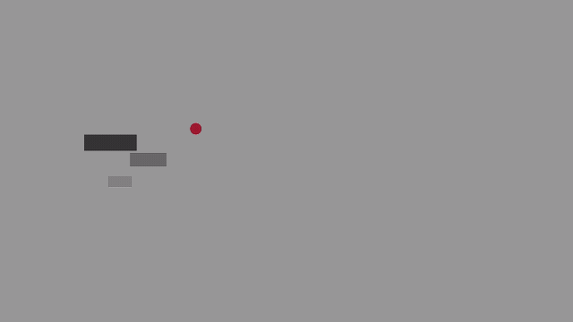
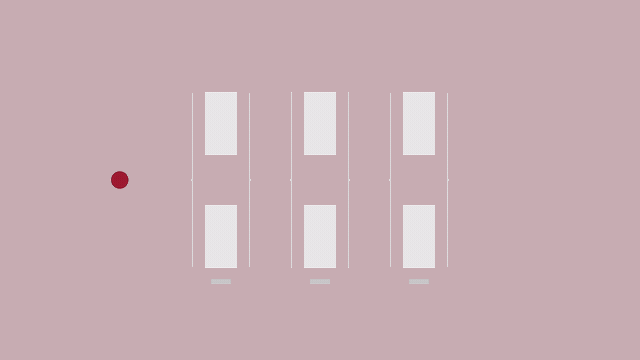
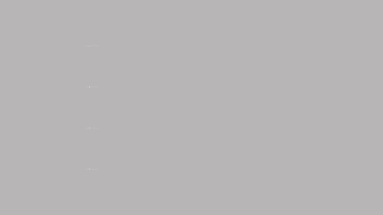
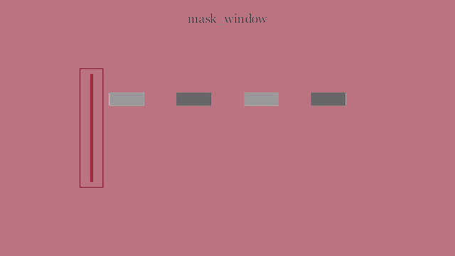

Receiver Slot
Reusable receiver slot with a pending outline, moving payload, and resolved terminal mark.

Generated by uv run --script spikes/component-library-demos/main.py --quality low.
Reusable receiver slot with a pending outline, moving payload, and resolved terminal mark.

Separated corner marks used as a terminal resolved-state cue.

Guided transfer lane between source and destination zones.

Prepared gates that open in sequence to make cadence visible.

Left-side timeline rail that narrates progressive card activation.

Moving mask window that reveals transferred outputs.
